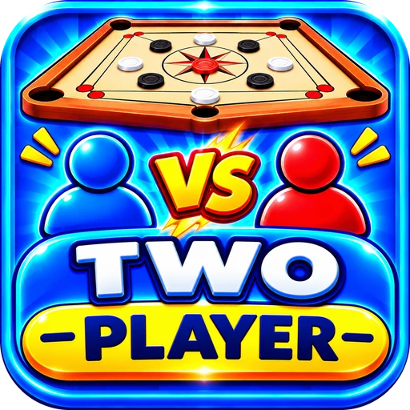
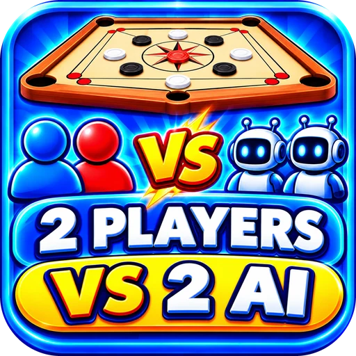
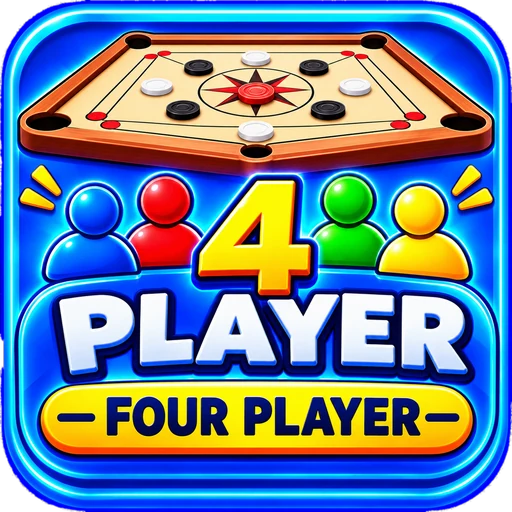
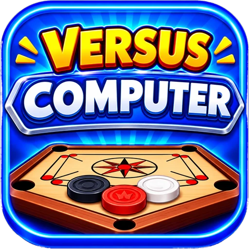

P1
0
–
P2
0
Carrom




Resume game
Sound: On
Install app
How to play
GAME OVER
Player 1 wins
Rematch
Change mode
How to play Carrom
The idea
Each player has 9 coins: Player 1 is
White
(shoots from the bottom line), Player 2 is
Black
(shoots from the top line). The red coin in the middle is the
Queen
.
You use one big disc, the
striker
, to hit your coins into the four corner pockets. First to pocket all 9 of their own coins wins, as long as the queen has been pocketed and covered by someone.
Controls
Place the striker
— slide the knob under the board. The striker moves along your line between the two end circles.
Shoot
— touch the board anywhere and drag
backwards
, like a slingshot. The dotted line shows where it will go; the longer you drag, the harder the shot. Let go to shoot, or drag back to the start to cancel.
Team modes (4 seats)
Four player
and
2 players vs 2 AI
use all four sides of the board. Partners sit
opposite
each other: the bottom and top seats are the
White
team, the right and left seats are the
Black
team.
Turns go clockwise: bottom → right → top → left. Pocketing a coin of your team's colour gives that seat another shot; coins count for the whole team.
In
2 players vs 2 AI
the two people (bottom and top) are partners against the two computer players (right and left). The seat that is shooting is labelled next to its line.
The team wins when all 9 of its coins are in, once the queen has been covered (by either team).
Rules
Pocket one of
your own
coins and you shoot again. If you miss, the turn passes.
A coin of the other colour that you pocket stays pocketed, but it counts for your opponent, and your turn ends.
Queen
— after you pocket the queen you must
cover
it by pocketing one of your own coins in the same turn or on your very next shot. If you don't, the queen goes back to the centre.
Foul
— if the striker falls in a pocket, your turn ends and one of your pocketed coins goes back to the centre (if you have none yet, the next coin you pocket goes back instead).
Nobody can finish before the queen is covered: if your last coin goes in while the queen is still on the board (or not yet covered), that coin goes back to the centre.